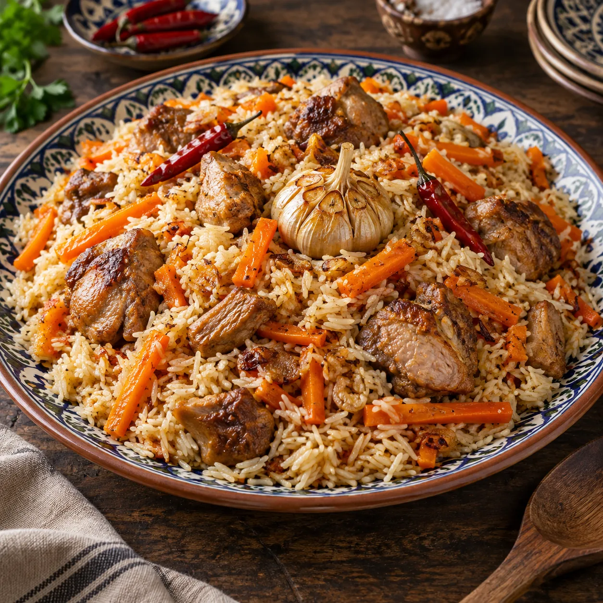

Unsere Klassiker · Reisgerichte
Plov

Ein herzhafter Plov mit lockerem Reis, süßen Karotten und saftiger Putenoberkeule. Das Gericht wird Schicht für Schicht gegart und erst ganz am Ende vorsichtig vermischt.
Zutaten
Grundrezept · 6 Portionen
600 gPutenoberkeule, alternativ Rindernacken, Rinderschulter, Lammnacken oder Lammschulter
400 gParboiled Langkornreis
500–550 gKarotten, gerne gelbe und orange
120 gZwiebeln
1 KnolleKnoblauch
1–2ganze Chilischoten
150 mlRaps- oder Sonnenblumenöl
1 ½ TLKreuzkümmel, ganz
1 TLKoriandersaat, gestoßen
2–3 TLPlovgewürz als Alternative zu Kreuzkümmel und Koriandersaat
2 TLSalz, später nach Geschmack
1 PriseZucker
Ca. 700 mlheißes Wasser
Zubereitung
- Den Reis mehrmals gründlich waschen, bis das Wasser fast klar bleibt. Anschließend mit etwa 50 °C warmem Wasser bedecken und rund 45 Minuten einweichen. Danach gut abtropfen lassen.
- Das Fleisch in große, mundgerechte Stücke schneiden. Zwiebeln würfeln und die Karotten in etwa streichholzgroße Stifte schneiden. Von der Knoblauchknolle nur die äußere, lose Schale entfernen; die Knolle bleibt ganz.
- Das Öl in einem Kazan oder einem großen, schweren Topf sehr heiß werden lassen. Das Fleisch portionsweise bei kräftiger Hitze rundherum scharf anbraten. Nicht zu viel auf einmal hineingeben, damit die Hitze erhalten bleibt und das Fleisch eine schöne Kruste bekommt. Das angebratene Fleisch kurz herausnehmen.
- Die Zwiebeln im heißen Öl goldgelb braten. Das Fleisch wieder dazugeben und gleichmäßig mit den Karotten bedecken. Die Schichten dabei nicht vermischen.
- Knoblauch und die geschlossenen Chilischoten mittig zwischen die Karotten setzen. Zunächst knapp die Hälfte des angegebenen heißen Wassers angießen, mit Salz und Zucker würzen und alles ohne Deckel rund 35 Minuten sanft köcheln lassen.
- Knoblauch und Chili kurz herausnehmen. Den abgetropften Reis von der Mitte nach außen gleichmäßig auf den Karotten verteilen, ohne ihn mit den unteren Schichten zu vermischen. Vorsichtig so viel heißes Wasser angießen, dass es knapp an den Reis heranreicht; der Reis soll nicht darin schwimmen.
- Offen und bei mittlerer Hitze garen, bis der Reis die Flüssigkeit weitgehend aufgenommen hat. Den Reis von außen nach innen wenden, dabei die Fleisch- und Karottenschicht darunter möglichst nicht berühren.
- Den Kreuzkümmel zwischen den Händen leicht zerreiben und zusammen mit der gestoßenen Koriandersaat über den Reis geben. Alternativ das Plovgewürz verwenden. Den Reis zu einem flachen Berg zusammenschieben, mehrere Löcher bis fast zum Topfboden hineinstechen und Knoblauch sowie Chili wieder daraufsetzen.
- Den Deckel schließen, die Hitze deutlich reduzieren und den Plov weitere 20 Minuten gar ziehen lassen. Danach 10 Minuten ruhen lassen, Knoblauch und Chili herausnehmen und den Reis locker mit Karotten und Fleisch vermischen. Abschmecken und gemeinsam auf einer großen Platte anrichten.
Dazu passt
Tipp
Im Originalrezept gehören auch Rosinen, Berberitzen und Kichererbsen in den Plov. Bei uns dürfen die drei heute allerdings zuschauen: Obst im Reis ist einfach nicht unser Ding – und die Kichererbsen bekommen ebenfalls frei. 😉